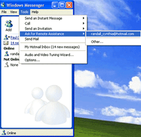
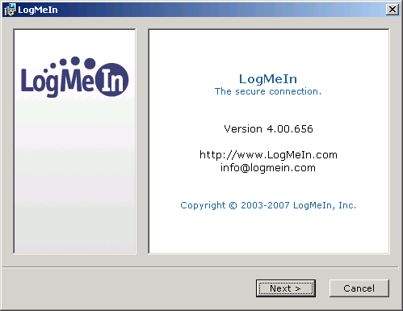
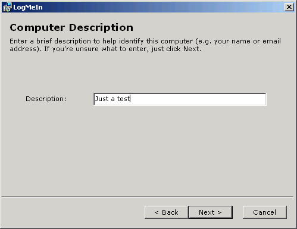
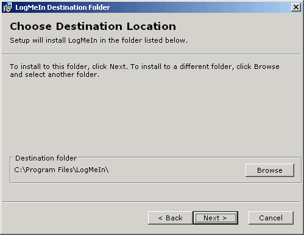

Remote Assistance
Към възможностите за дистанционен достъп до Windows PC се отнася и функцията Remote Assistance (RA), която е полезна при решаване на различни проблеми със системата и хардуера. Получаването или предоставянето на техническа помощ чрез RA може да бъде по-ефективно, отколкото личното присъствие, и по-сигурно, отколкото по телефона. Използването на RA е полезна възможност и в повечето случаи за разрешаване на общи проблеми в операционната система и в приложенията, та дори и за някои хардуерни проблеми.
За разлика от Remote Desktop, функцията Remote Assistance се намира на всички версии на Windows XP и Vista. Един недостатък обаче, е, че не винаги е възможно да се осъществи сполучлива връзка за RA, когато някоя от двете страни и най-вече този, който търси помощ, влиза в Интернет чрез рутер, използващ NAT (Network Address Translation). А днес повечето хора се свързват с Мрежата именно чрез NAT рутери.
Но ако рутерът поддържа също така и UpnP (Universal Plug and Play), то той би работил добре с RA. UpnP позволява на опцията RA да работи през NAT, като автоматично отваря правилните TCP/IP портове и осигурява връзката да стигне до правилния персонален компютър. За най-сигурен успех на връзката при RA е добре рутерите и на двете страни да поддържат UpnP. Повечето рутери, продавани през последните няколко години, го поддържат, но ако вашето устройство не е от тях, то можете да направите ъпгрейд с последния софтуер на фирмата–производител.
Преди да започнете процедурата за използване на RA, трябва да се уверите, че тази опция е включена. В Windows XP кликвате на Start, след това с десен бутон върху My Computer, кликвате Properties и избирате бутона Remote. Уверете се, че има отметка до Allow Remote Assistance покани да бъдат изпращани от вашия компютър. След това кликнете върху бутона Advanced и се уверете, че има отметка до Allow this computer to be controlled remotely. Така ще позволите на човека, който ви помага, да контролира системата ви и да вижда десктопа ви.
След това, желателно е, за ваша сигурност, да промените времето, за което поканите остават отворени. По подразбиране то е 30 дни, така че е добре да го промените на нещо по-кратко, като един ден, например. Можете да го настроите да бъде и няколко часа или дори минути.
За да позволите RA в Windows Vista, кликнете на Start, десен бутон върху Computer, след това Properties и изберете линка Remote Settings, който се намира под Tasks в горния ляв ъгъл. От там нататък процедурата прилича на тази в XP с изключение на факта, че когато кликнете върху бутона Advanced, ще забележите по подразбиране поканите да са оставени отворени само шест часа. Разполагате и с опцията да позволите само на хора с Windows Vista или с по-нова версия да могат да отговарят на поканите ви.
Когато възникне технически проблем и се нуждаете от помощ, RA ви предлага два основни начина, за да я получите. Първият е да поискате помощ чрез услугата Windows Messenger (Windows Live Messenger във Vista), а другият е чрез имейл. Един от плюсовете на използването на RA през Windows Messenger е, че за да има успешно установяване на връзка, е необходимо само една от страните да има UPnP рутер, тъй като Remote Assistance се възползва от вече установената Messenger връзка. От друга страна, и вие и вашият помагач трябва да бъдете логнати в Windows Messenger, което изисква и двамата да имате активен Windows Live ID или по-стария Microsoft/.NET Passport акаунт.
 За да направите RA молба в XP, кликнете върху Start, след това Help and Support, а после Invite a friend, за да поканите някой да ви помогне. От там кутията Use Windows Messenger ще ви позволи да посочите контакта, който искате да ви помогне (предполага се, че той ще бъде онлайн), или да се регистрирате за услугата, ако все още не сте го направили.
За да направите RA молба в XP, кликнете върху Start, след това Help and Support, а после Invite a friend, за да поканите някой да ви помогне. От там кутията Use Windows Messenger ще ви позволи да посочите контакта, който искате да ви помогне (предполага се, че той ще бъде онлайн), или да се регистрирате за услугата, ако все още не сте го направили.
Щом изберете контакт и кликнете Invite, за да поканите въпросния човек, той незабавно ще бъде уведомен, че го молите за помощ. Алтернативен метод е да пратите молбата си директно в Windows Messenger – кликнете с десен бутон върху контакта и изберете Ask за Remote Assistance.
Във Vista можете да поискате помощ директно от Windows Live Messenger, като кликнете с десния бутон върху името на контакта, а после изберете Start an activity и после Request Remote Assistance.
Когато човекът, от когото искате помощ, не е онлайн, вие пак можете да изпратите молба за помощ, но чрез имейл, който той ще получи и ще ви отговори по-късно – това изисква и двете страни да имат UpnP рутери.
За да пратите имейл покана в XP, след като изберете Invite за някой да ви помогне, въведете имейл адреса и кликнете Invite за този контакт. Къс помощник (уизърд) ще ви напомни да напишете името си, кратко съобщение, да определите срок на изтичане на поканата и да уточните парола, която получателят да използва, за да отговори на поканата ви.
Създаването на парола е изключително важно, тъй като след като я изпратите, вие няма да можете да контролирате поканата. По същата причина трябва да проверите внимателно имейл адреса, който въвеждате.
След като въведете цялата информация и кликнете Send Invitation, Windows ще използва вашето инсталирано имейл приложение, за да изпрати имейл с поканата като приложение. Информирайте вашия помощник за паролата, която сте избрали или чрез отделен имейл, или по телефона, като това е необходимо заради сигурността.
Ако използвате уеб базиран имейл вместо имейл програма, пак можете да изпратите покана за RA, избирайки като файл опция Save Invitation, която се намира точно под мястото, където въвеждате адреса. Това ще позволи да създадете файл за поканата (RAInvitation.msrcincident), който ще можете да изпратите по метод по ваш избор. Ако работите с имейл програма, която не е на Microsoft, то трябва да използвате именно този начин.
За да изпратите имейл покана за RA във Vista, кликнете на Start, All Programs, Maintenance, Windows Remote Assistance и след това кликнете Invite, за да поканите някой, на когото се доверявате да ви помогне. Това ще ви даде опции, подобни на описаните в XP, и ще можете да изпратите автоматично покана чрез имейл или да създадете прикачен файл, който да изпратите ръчно.
Вашият помагач може да отговори на поканата или чрез кликване на Accept в Messenger, или чрез отваряне на прикачения файл, ако е изпратен по имейл. Малко след това ще видите диалогов прозорец, който ви информира, че някой се опитва да се свърже с вашия компютър и ви пита дали ще му позволите. Няколко секунди, след като сте кликнали Yes, връзката трябва да се осъществи и вашият помагач ще може да види Windows десктоп ви. Ще се появи малък контролен панел, който ще ви позволи да комуникирате с другата страна чрез текст или гласово (последното само в XP).
RA връзката винаги започва в режим View Only, което означава, че вашата система може да се гледа от другия човек, но не и да се пипа. Помощникът ви може да кликне върху бутон, за да поиска контрол върху системата ви, но за да се осъществи това, вие трябва да потвърдите, че позволявате. Ако направите това, ще гледате как вашият помагач контролира системата ви, като вие можете веднага да си възвърнете контрола като натиснете клавиша ESC.
Когато поискате да прекратите окончателно RA връзката, кликнете върху бутона Disconnect. Ако имате нужда от още помощни сесии по-късно, можете да използвате поканата отново и отново, докато не изтече нейния срок.
Базирани в web услуги за отдалечен достъп
Бързите широколентови линии за връзка елиминират разходите за телефон и правят отдалеченият достъп почти толкова задоволителен, колкото в действителност да седите пред компютъра си. Но дори с Интернет, използването на традиционния софтуер за отдалечен достъп има един недостатък и това е сигурността. Надеждната работа на софтуера за отдалечен достъп през “защитна стена” (firewall) често се оказва трудно изпитание. Нещо повече, ако вашият IP адрес се променя периодично (което е обичайна практика), поддържането на възможността постоянно да фиксирате вашата отдалечена система в Интернет изисква допълнително конфигуриране.
В последните години обаче технологията за отдалечен достъп се подобри много и успя да отстрани много от недостатъците му.
Нововъведението, което може би заслужава най-много внимание, е базираната в уеб услуга за отдалечен достъп. Вместо да купувате, инсталирате и конфигурирате комуникационен софтуер на множество системи, вие просто изтегляте едно малко приложение – “агент”, осигурено от доставчика, на компютъра, до който искате да имате достъп. Агентът ви позволява да контролирате компютъра през един уеб браузър от буквално всеки друг персонален компютър. Доставчикът на услугата поддържа сървър в Интернет, който служи като посредник и улеснява връзката между двете системи.
Уеб базираните услуги за отдалечен достъп обикновено изискват малка или изобщо никаква конфигурация на “защитната стена”. Тъй като софтуерният агент поддържа постоянна връзка със сървърите на доставчика (подобно на софтуерен клиент за обмен на електронни съобщения в реално време), входящите заявки за отдалечен достъп се третират по отношение на сигурността като доверен трафик, т.е. от познат източник. Ако имате инсталиран софтуер от типа “защитна стена”, трябва да включите приложението-агент в списъка на доверените приложения, за да бъдат допуснати заявките за отдалечен достъп от “защитната стена”.
Уеб базираният подход за отдалечен достъп също така избягва проблема с променящите се IP адреси. Тъй като вие не осъществявате директен достъп до вашия компютър, а чрез уеб сайта на доставчика, няма нужда да знаете какъв е IP адресът на вашата система. Нещо повече, агентът информира сървъра на доставчика дали вашият IP адрес се променя, така че системата ви винаги да бъде достъпна.
Негативната страна на отдалечения достъп чрез уеб услуга е, че за разлика от самостоятелния софтуер, вие не можете просто да купите приложението и с това да приключите. Обикновено ще трябва да плащате месечни или годишни такси за времето, през което ползвате услугата. Тези такси могат да станат значителни след време, но като се вземат предвид удобството и надеждността, която получавате срещу тези пари, често пъти те се изплащат добре.
Независимо дали получавате отдалечения достъп от компютър или от уеб сайт, основните функции, които той предлага, са до голяма степен еднакви – те ви позволяват да взаимодействате с вашия компютър все едно, че седите пред него. Чрез отдалечен достъп можете да работите с приложения, да проверявате електронна поща, да прехвърляте файлове, и дори да изпращате документи, които се съхраняват на отдалечения компютър за печат към принтер на мястото, на което сте вие в момента. Всички комуникации с отдалечения компютър се осъществяват през кодирана връзка. За достъп до тази система вие обикновено трябва да се регистрирате с парола
LogMeIn
За съжаление, повечето интернет доставчици изобщо не предлагат възможност за получаване на реален IP адрес (който е необходим за да използвате, например VNC или Remote Desktop клиент за отдалечен достъп), а тези които предлагат изискват, да се заплаща допълнително.
Едно възможно решение на всички тези проблеми е да се използва web базирана услуга за отдалечен достъп. Един добър и достъпен пример е LogMeIn Free - това е безплатно решение, което не изисква реален IP адрес за да работи. Някои от ключовите му възможности са:
- - достъп чрез браузър - поддържат се всички съвременни браузъри, без необходимост от инсталиране на допълнителен софтуер.
- - пълен контрол над отдалечения компютър, като екранът му не се заключва при свързване, т.е. този, който може би е седнал пред него, може да вижда какво правите. Това е особено полезно ако трябва да покажете на как да се направи нещо (опцията може да бъде изключена ако е необходимо). За сравнение - вграденият в Windows Remote Desktop изключва локалния потребител ако се свърже външен такъв.
- - поддържане на много едновременно свързани външни потребители
- - възможност за чат между локалния потребител и този който е свързан отдалечено
- - високо ниво на сигурност - връзката се криптира със 128 или 256 битов шифър.
- - без необходимост от допълнителни настройки на Firewall, рутер или прокси - цялата комуникация се извършва през портовете, които се използват за HTTP.
- - не се изискват администраторски права на отдалечения компютър
За да започнете да използвате LogMeIn Free, първо трябва да си създадете (безплатен) акаунт на сайта му. Регистрацията е проста - изисква се да въведете само e-mail адрес и парола и да натиснете бутона "Create Account". След това е нужно да активирате акаунта си. За целта, би трябвало на електронната ви поща да сте получили писмо от LogMeIn, в което има линк, активиращ вашия акаунт и автоматично ще влезнете в него. Натиснете бутона “Save Account Settings”.
Следващата стъпка е да свалите LogMeIn Free и да го инсталирате на компютъра който ще управлявате отдалечено. В зависимост от това дали имате инсталиран Java Runtime на компютъра си, инсталацията ще се свали автоматично и ще започне, или ще ви се отвори стандартния за браузъра ви диалогов прозорец за сваляне. Във втория случай, просто свалете файла и го стартирайте. Просто следвайте инструкциите, като в прозорецът в който трябва да напишете Description, въведете кратко описание на компютъра който добавяте.





След прикючване на инсталацията, би трябвало на https://secure.logmein.com/computers.asp в списъка да се е появил компютърът ви. За да “влезете” от друг компютър в него, просто щракнете върху името му. Ще ви посрещне диалог в който трябва да въведете потребителското име с което влизате в компютъра, и паролата му (ако има такава). След въвеждането им, натиснете “Login”. Така ще влезнете в контролния панел на LogMeIn. Сега, за да управлявате отдалечения компютър, натиснете “Remote Control”.
Действията, които бяха описани до тук, могат да бъдат извършени и по различен начин, но в общи линии, за да контролирате отдалечено компютър, трябва:
- да се регистрирате еднократно (да си създадете акаунт)
- да влезете в акаунта си от компютъра който искате да контролирате
- да свалите инсталацията на LogMeIn Free
- да я инсталирате